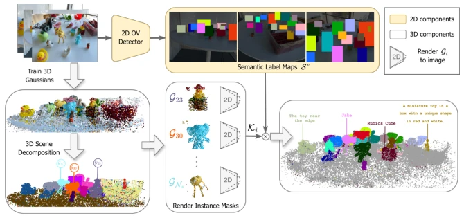
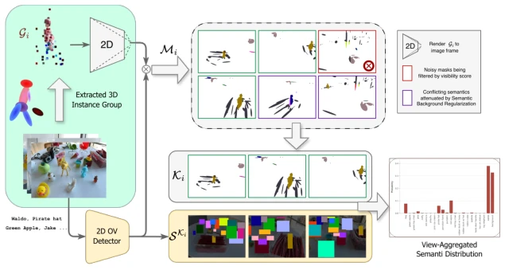
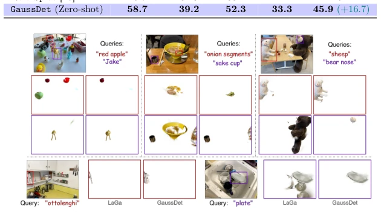
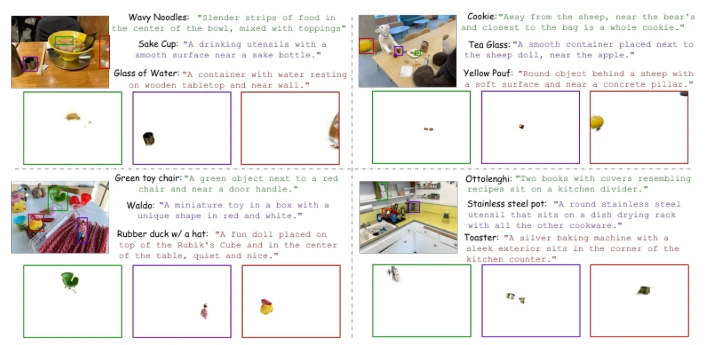
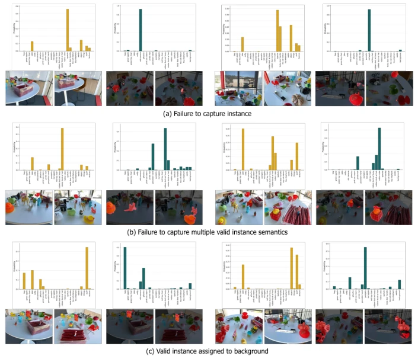
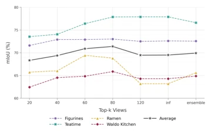
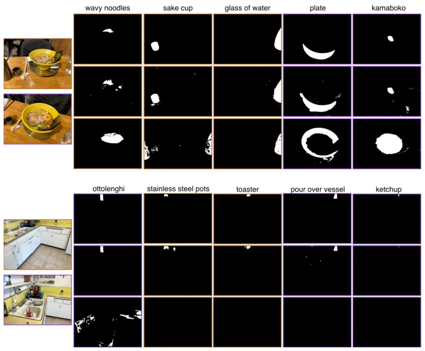
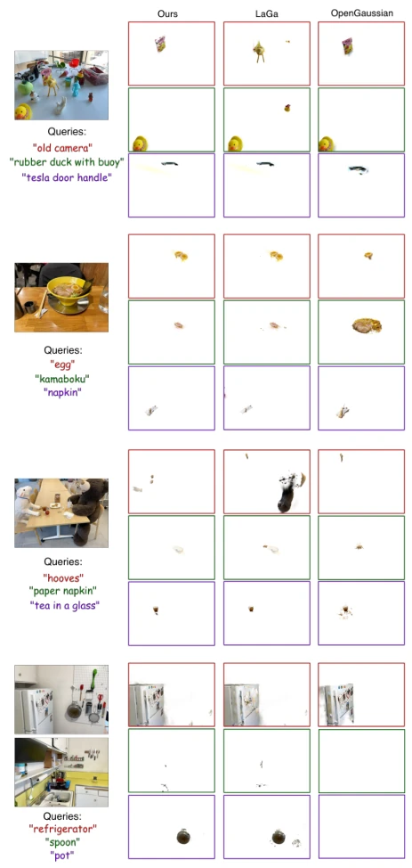
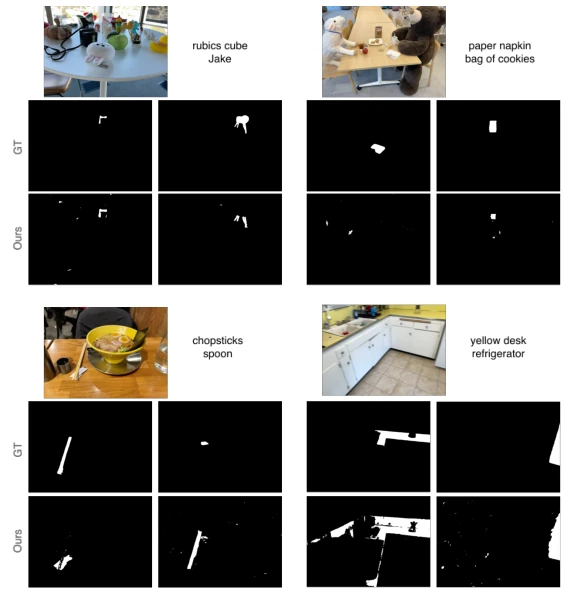
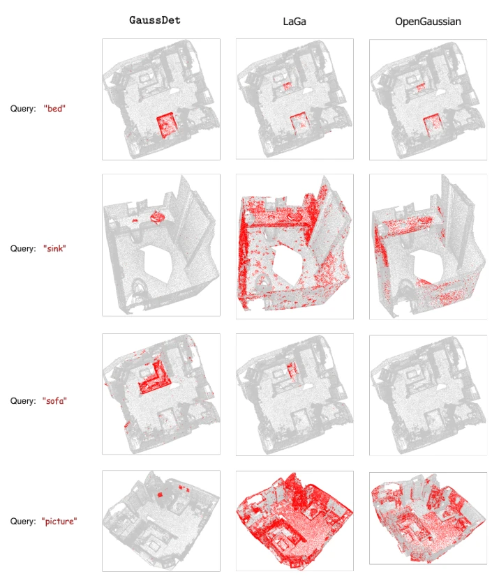

This GaussDet paper has both splashed a bucket of cold water on and poured fire into 3D Gaussian Splatting. It does not stubbornly pursue CLIP feature distillation like predecessors, but directly brings in a 2D detector as a "referee", using discrete label voting to decide Gaussian semantics. This trick is indeed effective, with mIoU on referring expressions surging by 16.7% in zero-shot, far stronger than ReferSplat which requires per-scene training. However, essentially this method is "borrowing a chicken to lay an egg", the semantic ceiling is locked by the 2D detector, and 3D grouping noise is not eradicated. But for scenarios not wanting to tune parameters or train, this is indeed a worry-free "plug-and-play" solution. Just do not expect it to understand complex spatial relationships like humans, after all it still relies on 2D box projections, encountering severe occlusion or single viewpoint, the effect will still be diminished.
3DGS has become popular, but semantic understanding has not kept pace. Existing methods such as OpenGaussian [37] and LaGa [8] rely on CLIP features, which restrict semantic queries to simple noun phrases, unable to handle complex spatial references. More troublesome is that their instance grouping mechanisms either require preset quantities or are easily disturbed by noise, leading to inaccurate semantic assignment. While methods like ReferSplat [13] can perform referring segmentation, they require optimization for each scene and suffer from poor generalization. GaussDet aims to break the CLIP bottleneck, leveraging the capabilities of 2D open-vocabulary detectors to achieve training-free complex language grounding, addressing the dual shortcomings of existing methods in semantic expressiveness and zero-shot generalization.

Fig. 2: GaussDet overall pipeline. We train a 3D Gaussian splat of the scene using RGB images with augmented instance features per Gaussian, which are used to decompose the scene into instance groups Gi. Each instance group Gi is rendered to image frames, and the top-K views Ki per instance group are selected. We obtain semantic label maps Sv using detections from a 2D open vocabulary object detector to generate a View-Aggregated Semantic Label Distribution (VASD) for each Gaussian via instance groups, using the semantic label maps Sv of the top-K views Ki.
方法Method
整体流程分三步走。首先，沿用 LaGa [8] 的思路，通过 2D 掩码监督学习实例特征，将 3D 高斯聚类成实例组。接着，核心创新在于语义分配：将每个实例组渲染到多个视角，筛选出可见性最高的 Top-K 视图。在这些视图上，利用 2D 开放词汇检测器生成离散语义标签图，而非提取密集 CLIP 特征。最后，聚合这些视图的标签投票，构建视图聚合语义标签分布（VASD）。具体而言，VASD 统计每个语义类在 Top-K 视图中的出现次数，并加权高斯显著性得分。此外，引入语义背景正则化器（SBR），显式保留背景索引，防止噪声高斯被错误分类。这种“多视图投票”机制有效抑制了低质量分组带来的误报，让语义分配更鲁棒。
The overall process proceeds in three steps. First, following the approach of LaGa [8], instance features are learned through 2D mask supervision, clustering 3D Gaussians into instance groups. Next, the core innovation lies in semantic allocation: rendering each instance group to multiple viewpoints, filtering out the Top-K views with the highest visibility. On these views, discrete semantic label maps are generated using a 2D open-vocabulary detector, rather than extracting dense CLIP features. Finally, aggregate the label voting from these views to construct the View-Aggregated Semantic Label Distribution (VASD). Specifically, VASD counts the occurrences of each semantic class in the Top-K views and weights them with Gaussian saliency scores. Additionally, a Semantic Background Regularizer (SBR) is introduced to explicitly retain background indices, preventing noise Gaussians from being misclassified. This "multi-view voting" mechanism effectively suppresses false positives caused by low-quality grouping, making semantic allocation more robust.

Fig. 3: View-Aggregated Semantic Label Distribution (VASD) generation. We extract 3D instance groups Gi and render them to camera frames to obtained filtered masks Mi . The top-K masks Ki are then chosen using the mask visibility score si,v. The discrete semantic label maps Sv of the top-K views are then used to build the VASD for the instance group.

Fig. 4: Qualitative comparison on the LeRF dataset for Open-Vocabulary Segmentation. For each query pair, the segmentation output from LaGa [8] (left) and the output from our method (right) are compared. GaussDet yields significantly sharper object boundaries and prevents semantic bleeding into the background.
实验Experiments
在 LeRF-OVS 和 ScanNet 上进行开放词汇分割测试，GaussDet 相比 LaGa 提升 5.8% mIoU。重点在 Ref-LeRF 指代表达任务上，零-shot 设置下比 ReferSplat 提升 16.7% mIoU，优势显著。消融实验显示，背景正则化器（SBR）能带来 6.56% 的平均提升，证明处理噪声分组的重要性。Top-K 视图选择策略通过集成多个 K 值进一步稳定性能。尽管在极度重叠场景仍有局限，但整体证明了 2D 检测器辅助 3D 语义的可行性，为具身智能提供了更高效的感知工具。
Open-vocabulary segmentation tests were conducted on LeRF-OVS and ScanNet, where GaussDet achieved a 5.8% mIoU improvement compared to LaGa. Focusing on the Ref-LeRF referring expression task, it improved mIoU by 16.7% over ReferSplat under zero-shot settings, showing significant advantage. Ablation studies show that the Background Regularizer (SBR) brings an average improvement of 6.56%, proving the importance of handling noisy grouping. The Top-K view selection strategy further stabilizes performance by integrating multiple K values. Although limitations remain in extremely overlapping scenarios, it overall proves the feasibility of 2D detector-assisted 3D semantics, providing a more efficient perception tool for embodied intelligence.

Fig. 5: Qualitative results on Ref-LeRF dataset for Referential Grounding.

Fig. 6: Comparison of Semantic Label Distributions. We contrast the baseline CLIP dense feature-based approach (left ) with our proposed VASD (right ). GaussDet overcomes (a) spurious 2D-3D mask associations, (b) under-segmentation of distinct objects, and (c) background class domination, producing robust semantic predictions.

Fig. 8: Influence of top-K choice.

Fig. 10: Qualitative comparison on the Ref-LeRF dataset. The first row displays the Ground Truth (GT), the second row shows the output from our method (GaussDet), and the third row shows the results from ReferSplat.
其他图片Other Figures

Fig. 9: Additional Open-Vocabulary Segmentation comparisons on LeRF. For each query, we compare the segmentation outputs of OpenGaussian, LaGa, and our proposed GaussDet.

Fig. 11: Failure cases. Our method faces challenges with heavily overlapping objects lacking multi-view coverage, leading to incomplete segmentations or residual back- ground artifacts.

Fig. 12: Qualitative comparison on ScanNet point clouds. We compare the segmentation outputs of OpenGaussian, LaGa, and our proposed GaussDet.